4. Acciones: el modelo
Volvamos a la arquitectura de una aplicación Spring MVC:
 |
En el capítulo anterior, hemos visto el proceso que lleva la solicitud [1] al controlador y a la acción [2a] que la procesarán, un mecanismo que se denomina enrutamiento. Además, hemos presentado las diferentes respuestas que una acción puede enviar al navegador. Hasta ahora hemos presentado acciones que no aprovechaban la solicitud que se les presentaba. Una solicitud [1] lleva consigo diversa información que Spring MVC presenta a la acción en forma de modelo. No hay que confundir este término con el modelo M de una vista V [2c] que es generada por la acción:
 |
- la solicitud HTTP del cliente llega a [1];
- en [2], la información contenida en la solicitud se transformará en el modelo de acción [3], una clase a menudo, pero no necesariamente, que servirá de entrada a la acción [4];
- en [4], la acción, a partir de este modelo, generará una respuesta. Esta tendrá dos componentes: una vista V [6] y el modelo M de esta vista [5];
- la vista V [6] utilizará su modelo M [5] para generar la respuesta HTTP destinada al cliente.
En el modelo MVC, la acción [4] forma parte del C (controlador), el modelo de la vista [5] es el M y la vista [6] es el V.
Este capítulo analiza los mecanismos de enlace entre la información transportada por la solicitud, que son por naturaleza cadenas de caracteres, y el modelo de la acción, que puede ser una clase con propiedades de diversos tipos.
Nota: el término [Modèle d'action] no es un término reconocido.
Creamos un nuevo controlador para estas nuevas acciones:
 |
El controlador [ActionModelController] será, por el momento, el siguiente:
package istia.st.springmvc.controllers;
import org.springframework.web.bind.annotation.RestController;
@RestController
public class ActionModelController {
}
- línea 5: recordamos que la anotación [@RestController] hace que la respuesta enviada al cliente sea la serialización en cadena de caracteres del resultado de las acciones del controlador;
4.1. [/m01]: parámetros de un GET
Añadimos la siguiente acción [/m01]:
// ----------------------- recuperar parámetros con GET------------------------
@RequestMapping(value = "/m01", method = RequestMethod.GET, produces = "text/plain;charset=UTF-8")
public String m01(String nom, String age) {
return String.format("Hello [%s-%s]!, Greetings from Spring Boot!", nom, age);
}
- línea 4: la acción admite dos parámetros denominados [nom] y [age]. Se inicializarán con parámetros que llevan esos mismos nombres en la solicitud HTTP GET;
Los resultados en Chrome son los siguientes para [1-3]:
 |
- en [1], la consulta GET con los parámetros [nom] y [age];
- en [3], se observa que la acción [/m01] ha recuperado correctamente estos parámetros;
4.2. [/m02]: parámetros de un POST
Añadimos la siguiente acción [/m02]:
// ----------------------- recuperar parámetros con POST------------------------
@RequestMapping(value = "/m02", method = RequestMethod.POST, produces = "text/plain;charset=UTF-8")
public String m02(String nom, String age) {
return String.format("Hello [%s-%s]!, Greetings from Spring Boot!", nom, age);
}
- línea 4: la acción admite dos parámetros denominados [nom] y [age]. Se inicializarán con parámetros que llevan esos mismos nombres en la consulta HTTP POST;
Los resultados con [Advanced rest Client] son los siguientes:
 |
- en [1-3], la consulta POST con los parámetros [nom] y [age];
- en [4-5], se establece el encabezado HTTP [Content-Type] de la consulta POST. Debe ser [Content-Type: application/x-www-form-urlencoded];
- en [6], [Form Data] proporciona la lista de parámetros de una operación POST. Aquí se ven los parámetros [nom] y [age];
- en [7], la respuesta del servidor que muestra que la acción [/m02] ha recuperado correctamente los parámetros [nom] y [age]; ;
4.3. [/m03]: parámetros con los mismos nombres
En el apartado 2.5.2.8 vimos que la lista de selección múltiple podía enviar al servidor parámetros con los mismos nombres. Veamos cómo una acción puede recuperarlos. Añadimos la siguiente acción [/m03]:
// ----------------------- recuperar parámetros con los mismos nombres-----------------
@RequestMapping(value = "/m03", method = RequestMethod.POST, produces = "text/plain;charset=UTF-8")
public String m03(String nom[]) {
return String.format("Hello [%s]!, Greetings from Spring Boot!", String.join("-", nom));
}
- línea 2: la acción admite un parámetro llamado [nombre[]]. Se inicializará aquí con todos los parámetros que lleven ese nombre, ya sea en un GET o en un POST, ya que aquí no se ha especificado el tipo de solicitud;
Los resultados son los siguientes:
 |
- mediante un POST [1], se envían los parámetros [2];
- también se incluyen parámetros en el URL [3];
- en [4], los cuatro parámetros con el mismo nombre [nom]: [Query String parameters] son los parámetros de URL, [Form Data] son los parámetros enviados;
- en [5], vemos que la acción [/m03] ha recuperado los cuatro parámetros denominados [nom];
4.4. [/m04]: asignar los parámetros de la acción a un objeto Java
Supongamos la siguiente nueva acción [/m04]:
// ------ asignar los parámetros a un objeto (Command Object) ---------------
@RequestMapping(value = "/m04", method = RequestMethod.POST)
public Personne m04(Personne personne) {
return person;
}
- línea 3: la acción tiene como parámetro una persona del siguiente tipo:
public class Personne {
// identificador
private Integer id;
// nombre
private String nom;
// edad
private int age;
....
// getters y setters
...
}
- para crear el parámetro [Personne personne], Spring MVC crea un [new Personne()];
- luego, si hay parámetros con el nombre de los campos [id, nom, age] del objeto creado, lo instancia con los campos a través de sus setters;
- línea 4: la acción devuelve un tipo [Personne] que, por lo tanto, se serializará en una cadena de caracteres antes de enviarse al cliente. Hemos visto que, por defecto, la serialización realizada era una serialización jSON. Por lo tanto, el cliente debería recibir la cadena jSON de una persona;
He aquí un ejemplo:
 |
- en [1], los parámetros [id, nom, age] para construir un objeto [Personne];
- en [2], la cadena jSON de esta persona;
¿Qué ocurre si no se envían todos los campos de una persona? Probemos:
 |
- en [2], solo se ha inicializado el parámetro [id];
4.5. [/m05]: recuperar los elementos de un URL
Sea la siguiente nueva acción [/m05]:
// ----------------------- recuperar los elementos del URL ------------------------
@RequestMapping(value = "/m05/{a}/x/{b}", method = RequestMethod.GET)
public Map<String, String> m05(@PathVariable("a") String a, @PathVariable("b") String b) {
Map<String, String> map = new HashMap<String, String>();
map.put("a", a);
map.put("b", b);
return map;
}
- línea 2: el URL procesado tiene la forma [/m05/{a}/x/{b}], donde {param} es un elemento parámetro del URL;
- línea 3: los elementos de parámetro del URL se recuperan con la anotación [@PathVariable];
- líneas 4-6: los elementos [a] y [b] recuperados se colocan en un diccionario;
- línea 7: la respuesta será la cadena jSON de este diccionario;
Los resultados son los siguientes:
 |
4.6. [/m06]: recuperar elementos de URL y parámetros
Sea la nueva acción [/m06] la siguiente:
// -------- recuperar elementos de URL y parámetros---------------
@RequestMapping(value = "/m06/{a}/x/{b}", method = RequestMethod.GET)
public Map<String, Object> m06(@PathVariable("a") Integer a, @PathVariable("b") Double b, Double c) {
Map<String, Object> map = new HashMap<String, Object>();
map.put("a", a);
map.put("b", b);
map.put("c", c);
return map;
}
- línea 3: se recuperan a la vez elementos de URL [Integer a, Double b] y un parámetro (GET o POST) [Double c];
- líneas 4-7: estos elementos se colocan en un diccionario;
- línea 8: que forma la respuesta del cliente, el cual recibirá, por tanto, la cadena jSON de este diccionario;
Estos son los resultados:
 |
Cabe destacar la barra / al final de la ruta [http://localhost:8080/m06/100/x/200.43/]. Sin ella, se obtiene el siguiente resultado incorrecto:
 |
4.7. [/m07]: acceder a la totalidad de la consulta
Consideremos la siguiente nueva acción [/m07]:
// ------ acceder a la consulta HttpServletRequest ------------------------
@RequestMapping(value = "/m07", method = RequestMethod.GET, produces = "text/plain;charset=UTF-8")
public String m07(HttpServletRequest request) {
// las cabeceras HTTP
Enumeration<String> headerNames = request.getHeaderNames();
StringBuffer buffer = new StringBuffer();
while (headerNames.hasMoreElements()) {
String name = headerNames.nextElement();
buffer.append(String.format("%s : %s\n", name, request.getHeader(name)));
}
return buffer.toString();
}
- línea 3: se le pide a Spring MVC que inyecte el objeto [HttpServletRequest request], que encapsula toda la información que se puede obtener de la solicitud;
- líneas 5-10: se recuperan todos los encabezados HTTP de la solicitud para ensamblarlos en una cadena de caracteres que se envía al cliente (línea 11);
Los resultados son los siguientes:
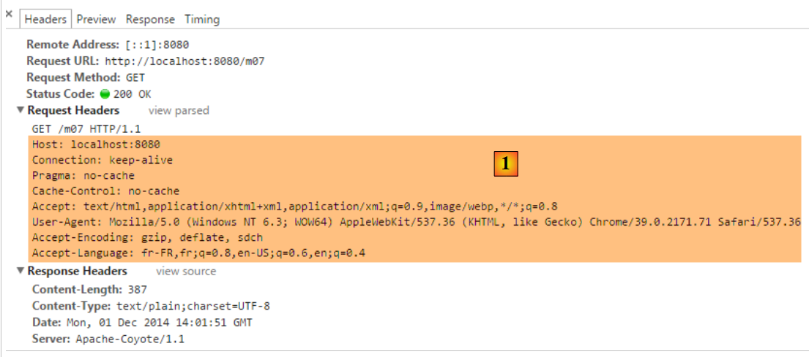 |
- en [1], los encabezados HTTP de la consulta;
 |
- en [2], la respuesta. Aquí se encuentran todos los encabezados HTTP de la solicitud.
4.8. [/m08]: acceso al objeto [Writer]
Consideremos la siguiente acción:
// ----------------------- inyección de writer ------------------------
@RequestMapping(value = "/m08", method = RequestMethod.GET)
public void m08(Writer writer) throws IOException {
writer.write("Bonjour le monde !");
}
- línea 3: Spring MVC inyecta el objeto [Writer writer], que permite escribir en el flujo de la respuesta al cliente;
- línea 3: la acción devuelve un tipo [void], lo que indica que debe construir por sí misma la respuesta al cliente;
- línea 4: se añade un texto al flujo de la respuesta al cliente;
Los resultados son los siguientes:
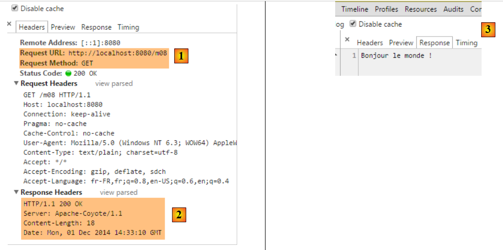 |
- en [2], se ve que el encabezado HTTP [Content-Type] no se ha enviado;
- en [3], la respuesta;
4.9. [/m09]: acceder a un encabezado HTTP
Consideremos la siguiente acción:
// ----------------------- inyección de RequestHeader ------------------------
@RequestMapping(value = "/m09", method = RequestMethod.GET)
public String m09(@RequestHeader("User-Agent") String userAgent) {
return userAgent;
}
- línea 3: la anotación [@RequestHeader("User-Agent")] permite recuperar el encabezado HTTP [User-Agent];
- línea 4: se muestra el texto de este encabezado;
Los resultados son los siguientes:
 |
- en [2], el encabezado HTTP [User-Agent];
 |
- en [3], la acción [/m08] ha recuperado correctamente este encabezado;
4.10. [/m10, /m11]: acceder a una cookie
Una cookie es, por lo general, un encabezado HTTP que el:
- servidor envía por primera vez al cliente;
- el cliente devuelve sistemáticamente al servidor;
Creemos primero una acción que cree la cookie:
// ----------------------- creación de Cookie ------------------------
@RequestMapping(value = "/m10", method = RequestMethod.GET)
public void m10(HttpServletResponse response) {
response.addCookie(new Cookie("cookie1", "remember me"));
}
- línea 3: se inserta el objeto [HttpServletResponse response] para tener control total sobre la respuesta;
- línea 4: creamos una cookie con una clave [cookie1] y un valor [remember me] (Nota: los caracteres acentuados en el valor de una cookie provocan errores);
- línea 3: la acción no devuelve nada. Además, no escribe nada en el cuerpo de la respuesta. Por lo tanto, el cliente recibirá un documento vacío. La respuesta solo se utiliza para añadirle el encabezado HTTP de una cookie;
Veamos los resultados:
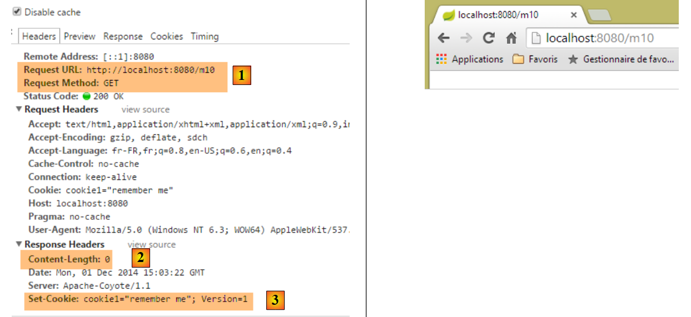 |
- en [1]: la solicitud;
- en [2]: la respuesta está vacía;
- en [3]: la cookie creada por la acción;
Ahora vamos a crear una acción para recuperar esa cookie que el navegador enviará a partir de ahora con cada solicitud:
// ----------------------- inyección de cookie ------------------------
@RequestMapping(value = "/m11", method = RequestMethod.GET)
public String m10(@CookieValue("cookie1") String cookie1) {
return cookie1;
}
- línea 3: la anotación [@CookieValue("cookie1")] permite recuperar la cookie de clave [cookie1];
- línea 4: este valor será la respuesta enviada al cliente;
Veamos los resultados:
 |
- en [2], vemos que el navegador devuelve la cookie;
- en [3], la acción la ha recuperado correctamente;
4.11. [/m12]: acceder al cuerpo de un POST
Los parámetros enviados suelen ir acompañados de la cabecera HTTP [Content-Type: application/x-www-form-urlencoded]. Se puede acceder a toda la cadena enviada. Creamos la siguiente acción:
// ----------- recuperar el cuerpo de un POST de tipo String------------------------
@RequestMapping(value = "/m12", method = RequestMethod.POST)
public String m12(@RequestBody String requestBody) {
return requestBody;
}
- línea 3: la anotación [@RequestBody] permite recuperar el cuerpo de POST. Aquí, suponemos que este es de tipo [String];
- línea 4: se devuelve este cuerpo al cliente;
He aquí un primer ejemplo:
 |
- en [2], los valores enviados;
- en [3], el encabezado HTTP [Content-Type] de la solicitud;
- en [4], la respuesta del servidor;
Los parámetros enviados no siempre tienen la forma simple [p1=v1&p2=v2] que hemos utilizado a menudo hasta ahora. Veamos un caso más complejo:
 |
- en [2-3]: se introducen los valores enviados en el formato [clé:value];
- en [5], la cadena que se ha enviado;
Con el tipo [Content-Type: application/x-www-form-urlencoded], la cadena enviada debe tener el formato [p1=v1&p2=v2]. Si queremos enviar cualquier cosa, utilizaremos el tipo [Content-Type: text/plain]. He aquí un ejemplo:
 |
- en [2-3], se crea el encabezado HTTP [Content-Type]. Por defecto, [5], es este el que se utilizará en lugar del definido en [6]. El atributo [charset=utf-8] es importante. Sin él, se pierden los caracteres acentuados de la cadena enviada;
- en [4], la cadena enviada se recupera correctamente en [7];
4.12. [/m13, /m14]: recuperar valores enviados en jSON
Es posible enviar parámetros con el encabezado HTTP [Content-Type: application/json]. Creamos la siguiente acción:
// ----------------------- recuperar el cuerpo jSON de un POST
@RequestMapping(value = "/m13", method = RequestMethod.POST, consumes = "application/json")
public String m13(@RequestBody Personne personne) {
return personne.toString();
}
- línea 2: [consumes = "application/json"] especifica que la acción espera un cuerpo jSON;
- línea 3: [@RequestBody] representa este cuerpo. Esta anotación se ha asociado a un objeto de tipo [Personne]. El cuerpo jSON se deserializará automáticamente en este objeto;
- línea 4: se utiliza el método [Personne].toString() para devolver algo que no sea la cadena jSON enviada;
He aquí un ejemplo:
 |
- en [2], la cadena jSON enviada;
- en [3], el [Content-Type] de la solicitud;
- en [4], la respuesta del servidor;
Se puede hacer lo mismo de otra manera:
// ----------------------- recuperar el cuerpo jSON de un POST 2 -------------------
@RequestMapping(value = "/m14", method = RequestMethod.POST, consumes = "text/plain")
public String m14(@RequestBody String requestBody) throws JsonParseException, JsonMappingException, IOException {
Personne personne = new ObjectMapper().readValue(requestBody, Personne.class);
return personne.toString();
}
- línea 2: se ha indicado que el método espera un flujo de tipo [text/plain]. Spring MVC tratará entonces el cuerpo de la solicitud como un tipo [String] (línea 3);
- línea 4: se deserializa la cadena jSON en un objeto [Personne] (véase el apartado 9.7, página 543);
Los resultados son los siguientes:
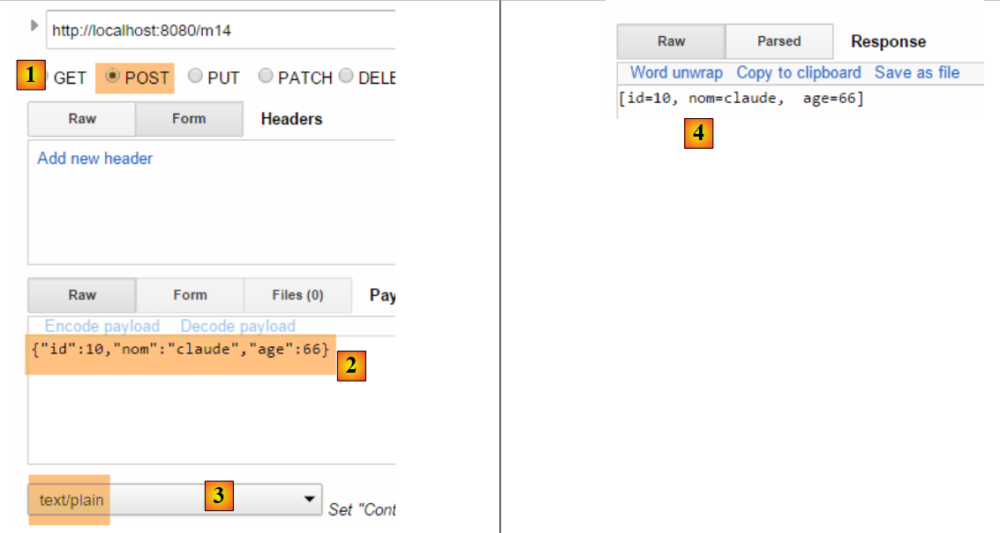 |
- en [3], hay que poner bien [text/plain];
4.13. [/m15]: recuperar la sesión
Volvamos a la arquitectura de ejecución de una acción:
 |
La clase del controlador se instancia al inicio de la solicitud del cliente y se destruye al final de la misma. Por lo tanto, no puede utilizarse para almacenar datos entre dos solicitudes, aunque se llame a ella repetidamente. Es posible que se desee almacenar dos tipos de datos:
- datos compartidos por todos los usuarios de la aplicación web. Por lo general, se trata de datos de solo lectura;
- datos compartidos por las solicitudes de un mismo cliente. Estos datos se almacenan en un objeto denominado «Sesión». Se habla entonces de «sesión de cliente» para referirse a la memoria del cliente. Todas las solicitudes de un cliente tienen acceso a esta sesión. Pueden almacenar y leer información en ella.
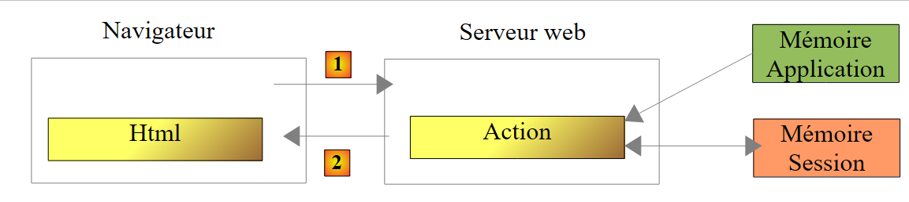 |
Arriba mostramos los tipos de memoria a los que tiene acceso una acción:
- la memoria de la aplicación, que contiene en su mayor parte datos de solo lectura y a la que pueden acceder todos los usuarios;
- la memoria de un usuario concreto, o sesión, que contiene datos de lectura/escritura y a la que pueden acceder las solicitudes sucesivas de un mismo usuario;
- aunque no aparece en la imagen anterior, existe una memoria de solicitud, o contexto de solicitud. La solicitud de un usuario puede ser procesada por varias acciones sucesivas. El contexto de la solicitud permite que una acción 1 transmita información a una acción 2.
Veamos un primer ejemplo que ilustra estas diferentes memorias:
// ----------------------- recuperar la sesión ------------------------
@RequestMapping(value = "/m15", method = RequestMethod.GET, produces = "text/plain;charset=UTF-8")
public String m15(HttpSession session) {
// se recupera el objeto de clave [compteur] de la sesión
Object objCompteur = session.getAttribute("compteur");
// se convierte en entero para incrementarlo
int iCompteur = objCompteur == null ? 0 : (Integer) objCompteur;
iCompteur++;
// se vuelve a colocar en la sesión
session.setAttribute("compteur", iCompteur);
// se devuelve como resultado de la acción
return String.valueOf(iCompteur);
}
Spring MVC mantiene la sesión del usuario en un objeto de tipo [HttpSession].
- línea 3: se le pide a Spring MVC que inyecte el objeto [HttpSession] en los parámetros de la acción;
- línea 5: en ella se recupera un atributo denominado [compteur]. Una sesión se comporta como un diccionario, un conjunto de pares [clé, valeur]. Si la clave [compteur] no existe en la sesión, se recupera un puntero nulo;
- línea 7: el valor asociado a la clave [compteur] será de tipo [Integer];
- línea 8: incremento del contador;
- línea 10: actualización del contador en la sesión;
- línea 12: el valor del contador se envía al cliente;
Cuando se ejecute [/m15] por primera vez,
- primera vez, en la línea 12 el contador tendrá el valor 1;
- segunda vez, en la línea 5 se recuperará este valor 1 para cambiarlo a 2;
- ...
He aquí un ejemplo de ejecución:
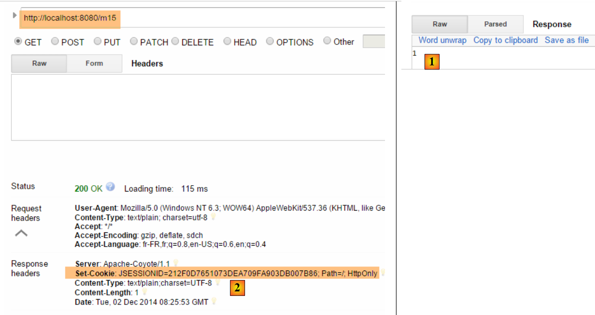 |
- en [1], se obtiene correctamente el primer valor del contador;
- en [2], el servidor ha enviado una cookie de sesión. Tiene la clave [JSESSIONID] y como valor una cadena de caracteres única para cada usuario. Recordemos que el navegador reenvía sistemáticamente las cookies que recibe. Así, cuando solicitemos la acción [/m15] por segunda vez, el cliente reenviará esta cookie, lo que permitirá al servidor reconocerlo y vincularlo a su sesión. De esta forma se mantiene la memoria del usuario;
Veamos la segunda solicitud:
 |
- en [3], vemos que el cliente reenvía la cookie de sesión. Se puede observar que en la respuesta del servidor ya no aparece esta cookie de sesión. Ahora es el cliente quien la envía para que se le reconozca;
- en [4], el segundo valor del contador. Efectivamente, se ha incrementado;
4.14. [/m16]: recuperar un objeto de ámbito [session]
Es posible que queramos poner todos los datos de la sesión de un usuario en un único objeto y poner solo este en la sesión. Seguimos este camino. Ponemos el contador en el siguiente objeto [SessionModel]:
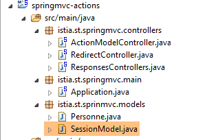 |
package istia.st.sprinmvc.models;
import org.springframework.context.annotation.Scope;
import org.springframework.context.annotation.ScopedProxyMode;
import org.springframework.stereotype.Component;
@Component
@Scope(value = "session", proxyMode = ScopedProxyMode.TARGET_CLASS)
public class SessionModel {
private int compteur;
public int getCompteur() {
return compteur;
}
public void setCompteur(int compteur) {
this.compteur = compteur;
}
}
- línea 7: la anotación [@Component] es una anotación de Spring (línea 5) que convierte a la clase [SessionModel] en un componente cuyo ciclo de vida es gestionado por Spring;
- línea 8: la anotación [@Scope(value = "session", proxyMode = ScopedProxyMode.TARGET_CLASS)] es también una anotación de Spring (líneas 3-4). Cuando Spring MVC la encuentra, se crea la clase correspondiente y se coloca en la sesión del usuario. El atributo [proxyMode = ScopedProxyMode.TARGET_CLASS] es importante. Gracias a él, Spring MVC crea una instancia por usuario y no una única instancia para todos los usuarios (singleton);
- línea 11: el contador;
Para que se reconozca este nuevo componente Spring, hay que comprobar la configuración de la aplicación en la clase [Application]:
package istia.st.springmvc.main;
import org.springframework.boot.SpringApplication;
import org.springframework.boot.autoconfigure.EnableAutoConfiguration;
import org.springframework.context.annotation.ComponentScan;
import org.springframework.context.annotation.Configuration;
@Configuration
@ComponentScan({"istia.st.springmvc.controllers"})
@EnableAutoConfiguration
public class Application {
public static void main(String[] args) {
SpringApplication.run(Application.class, args);
}
}
- línea 9: los componentes Spring se buscan en el paquete [istia.st.springmvc.controllers]. Esto ya no es suficiente. Modificamos esta línea de la siguiente manera:
@ComponentScan({ "istia.st.springmvc.controllers", "istia.st.springmvc.models" })
Hemos añadido el paquete donde se encuentra la clase [SessionModel].
Ahora añadimos la siguiente acción:
@Autowired
private SessionModel session;
// ------ gestionar un objeto de ámbito (scope) de sesión [Autowired] -----------
@RequestMapping(value = "/m16", method = RequestMethod.GET, produces = "text/plain;charset=UTF-8")
public String m16() {
session.setCompteur(session.getCompteur() + 1);
return String.valueOf(session.getCompteur());
}
- líneas 1-2: el componente Spring [SessionModel] se inyecta [@Autowired] en el controlador. Recordemos aquí que un controlador Spring es un singleton. Por lo tanto, resulta paradójico inyectar en él un componente de alcance menor, en este caso de alcance [Session]. Aquí es donde interviene la anotación [@Scope(value = "session", proxyMode = ScopedProxyMode.TARGET_CLASS)] del componente [SessionModel]. Cada vez que el código del controlador accede al campo [session] de la línea 2, se ejecuta un método proxy para devolver la sesión de la solicitud que el controlador está procesando en ese momento;
- línea 6: ya no se necesita el objeto [HttpSession] en los parámetros de la acción;
- línea 7: se recupera/incrementa el contador;
- línea 8: se devuelve su valor;
He aquí un ejemplo de ejecución:
La primera vez
 |
La segunda vez
 |
Ahora, tomemos otro navegador que representará a un segundo usuario. En este caso, utilizamos el navegador Opera:
 |
Arriba, en [1], este segundo usuario obtiene un valor de contador de 1. Esto demuestra que su sesión y la del primer usuario son diferentes. Si observamos los intercambios cliente/servidor (Ctrl-Mayús-I también para Opera), vemos en [2] que este segundo usuario tiene una cookie de sesión diferente a la del primer usuario. Esto es lo que garantiza la independencia de las sesiones.
4.15. [/m17]: recuperar un objeto de ámbito [application]
Volvamos a la arquitectura de ejecución de una acción:
 |
Sabemos cómo construir la sesión del usuario. Ahora vamos a construir un objeto de ámbito [application] cuyo contenido será de solo lectura y accesible para todos los usuarios. Introducimos la clase [ApplicationModel], que será el objeto de ámbito [application]:
 |
package istia.st.springmvc.models;
import java.util.concurrent.atomic.AtomicLong;
import org.springframework.stereotype.Component;
@Component
public class ApplicationModel {
// contador
private AtomicLong compteur = new AtomicLong(0);
// getters y setters
public AtomicLong getCompteur() {
return compteur;
}
public void setCompteur(AtomicLong compteur) {
this.compteur = compteur;
}
}
- línea 5: la anotación [@Component] hace que la clase [ApplicationModel] sea un componente gestionado por Spring. La naturaleza por defecto de los componentes Spring es el tipo [singleton]: el componente se crea en una única instancia cuando se instancia el contenedor Spring, es decir, generalmente al iniciar la aplicación. Podemos utilizar este ciclo de vida para almacenar en el singleton información de configuración a la que podrán acceder todos los usuarios;
- línea 11: un contador de tipo [AtomicLong]. Este tipo tiene un método [incrementAndGet] denominado atómico. Esto significa que un hilo que ejecuta este método tiene la garantía de que otro hilo no leerá el valor del contador (Get) entre su lectura (Get) y su incremento (increment) por parte del primer hilo, lo que provocaría errores, ya que dos hilos leerían el mismo valor del contador y, en lugar de incrementarse en dos, se incrementaría en uno;
Creamos la siguiente acción nueva [/m17]:
@Autowired
private ApplicationModel application;
// ----- gestionar un objeto de ámbito de aplicación [Autowired] ------------------------
@RequestMapping(value = "/m17", method = RequestMethod.GET, produces = "text/plain;charset=UTF-8")
public String m17() {
return String.valueOf(application.getCompteur().incrementAndGet());
}
- líneas 1-2: se inyecta el componente [ApplicationModel] en el controlador. Se trata de un singleton. Por lo tanto, cada usuario tendrá una referencia al mismo objeto;
- línea 7: devolvemos el contador de ámbito [application] tras haberlo incrementado;
Aquí hay dos ejemplos, uno con Chrome y otro con Opera:
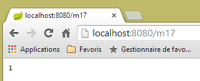 |  |
Arriba se ve que los dos navegadores han trabajado con el mismo contador, lo que no ocurría con la sesión. Estos dos navegadores representan a dos usuarios diferentes que tienen acceso ambos a los datos del ámbito [application]. En general, se evitará incluir en los objetos de ámbito [application] información de lectura/escritura, tal y como se ha hecho anteriormente con el contador. De hecho, los subprocesos de ejecución de los diferentes usuarios acceden al mismo tiempo a los datos del ámbito [application]. Si hay información de escritura, es necesario sincronizar los accesos de escritura, tal y como se ha hecho anteriormente con el tipo [AtomicLong]. Los accesos concurrentes son fuente de errores de programación. Por lo tanto, es preferible incluir únicamente información de solo lectura en los objetos de ámbito [application].
4.16. [/m18]: recuperar un objeto de ámbito [session] con [@SessionAttributes]
Existe otra forma de recuperar información del ámbito [session]. Vamos a poner en sesión el siguiente objeto:
package istia.st.springmvc.models;
public class Container {
// el contador
public int compteur=10;
// los getters y setters
public int getCompteur() {
return compteur;
}
public void setCompteur(int compteur) {
this.compteur = compteur;
}
}
Vamos a utilizar este objeto con las dos acciones siguientes:
// uso de [@SessionAttribute] ----------------------
@RequestMapping(value = "/m18", method = RequestMethod.GET)
public void m18(HttpSession session) {
// aquí se introduce la clave [container] en la sesión
session.setAttribute("container", new Container());
}
// uso de [@ModelAttribute] ----------------------
// la clave [container] de la sesión se insertará aquí
@RequestMapping(value = "/m19", method = RequestMethod.GET)
public String m19(@ModelAttribute("container") Container container) {
container.setCompteur(1 + container.getCompteur());
return String.valueOf(container.getCompteur());
}
- líneas 3-6: la acción [/m18] no devuelve ningún resultado. Solo sirve para crear un objeto en la sesión con la clave [container];
- línea 11: en la acción [/m19], se utiliza la anotación [@ModelAttribute]. El comportamiento de esta anotación es bastante complejo. El parámetro [container] de esta anotación puede designar varias cosas y, en particular, un objeto de la sesión. Para ello, es necesario que este haya sido declarado con una anotación [@SessionAttributes] en la propia clase:
@RestController
@SessionAttributes({"container"})
public class ActionModelController {
- la línea 2 anterior designa la clave [container] como parte de los atributos de la sesión;
Resumamos:
- en [/m18], la clave [container] se incluye en la sesión;
- la anotación [@SessionAttributes({"container"})] hace que esta clave pueda inyectarse en un parámetro anotado con [@ModelAttribute("container")];
- no se ve en el ejemplo de ejecución que viene a continuación, pero una información anotada con [@ModelAttribute] forma parte automáticamente del modelo M transmitido a la vista V;
He aquí un ejemplo de ejecución. En primer lugar, se introduce la clave [container] en la sesión con la acción [/m18] [1]. A continuación, se llama dos veces a la acción [/m19] para ver cómo se incrementa el contador.
 |
4.17. [/m20-/m23]: inserción de información con [@ModelAttribute]
Consideremos la siguiente acción nueva:
// el atributo p formará parte de todas las plantillas de vista [Model] ----------------
@ModelAttribute("p")
public Personne getPersonne() {
return new Personne(7,"abcd", 14);
}
// ---------------instanciación de @ModelAttribute --------------------------
// se inyectará si está en la sesión
// se inyectará si el controlador ha definido un método para este atributo
// puede proceder de los campos de URL si existe un convertidor String --> tipo del atributo
//; de lo contrario, se construye con el constructor por defecto
// a continuación, los atributos del modelo se inicializan con los parámetros de GET o de POST
// el resultado final formará parte de la plantilla generada por la acción
// el atributo p se inyecta en los argumentos------------------------
@RequestMapping(value = "/m20", method = RequestMethod.GET)
public Personne m20(@ModelAttribute("p") Personne personne) {
return personne;
}
- líneas 2-5: definen un atributo de modelo denominado [p]. Se trata del modelo M de una vista V, modelo representado por un tipo [Model] en Spring MVC. Un modelo se comporta como un diccionario de pares [clé, valeur]. Aquí, la clave [p] está asociada al objeto [Personne] construido por el método [getPersonne]. El nombre del método puede ser cualquiera;
- línea 17: el atributo de modelo de clave [p] se inyecta en los parámetros de la acción. Esta inyección se realiza según las reglas de las líneas 8-12. Aquí nos encontramos en el caso definido en la línea 9. Por lo tanto, en la línea 17, el parámetro [Personne personne] será el objeto [Personne(7,'abcd',14)];
- línea 18: devolvemos el objeto [personne] para su verificación. Este se serializará como jSON antes de enviarse al cliente.
He aquí un ejemplo:
 |
Ahora, examinemos la siguiente acción:
// --------- el atributo p forma parte automáticamente de la plantilla M de la vista V
@RequestMapping(value = "/m21", method = RequestMethod.GET)
public String m21(Model model) {
return model.toString();
}
Una acción que quiera mostrar una vista V debe construir el modelo M de la misma. Spring MVC gestiona este modelo con un tipo [Model] que puede inyectarse en los parámetros de la acción. Inicialmente, este modelo está vacío o contiene la información etiquetada con la anotación [@ModelAttribute]. La acción enriquece o no este modelo antes de transmitirlo a una vista.
- línea 3: inyección del modelo M;
- línea 4: queremos ver qué hay dentro. Lo serializamos en una cadena de caracteres para enviarlo al cliente. Aquí se utilizará el método [Personne.toString]. Por lo tanto, es necesario que exista;
He aquí una ejecución:
 |
Arriba, vemos que las instrucciones:
@ModelAttribute("p")
public Personne getPersonne() {
return new Personne(7,"abcd", 14);
}
han creado una entrada [p, Personne(7,'abcd',14)] en el modelo. Siempre es así.
Consideremos ahora el siguiente caso:
// de lo contrario, se construye con el constructor por defecto
// a continuación, los atributos del modelo se inicializan con los parámetros de GET o de POST
con la siguiente acción:
// --------- el atributo de modelo [param1] forma parte del modelo, pero no está inicializado
@RequestMapping(value = "/m22", method = RequestMethod.GET)
public String m22(@ModelAttribute("param1") String p1, Model model) {
return model.toString();
}
- línea 3: el atributo de modelo de clave [param1] no existe. En este caso, el tipo asociado debe tener un constructor por defecto. Este es el caso aquí del tipo [String], pero no se puede escribir [@ModelAttribute("param1") Integer p1] porque la clase [Integer] no tiene un constructor por defecto;
- línea 4: se devuelve el modelo para ver si el atributo de modelo de clave [param1] forma parte de él;
He aquí un ejemplo de ejecución:
 |
El atributo de modelo [param1] está presente en el modelo, pero el método [toString] del valor asociado no proporciona ninguna indicación sobre este valor.
Consideremos ahora la siguiente acción, en la que introducimos explícitamente una información en el modelo:
// --------- el atributo de modelo [param2] se incluye explícitamente en el modelo
@RequestMapping(value = "/m23", method = RequestMethod.GET)
public String m23(String p2, Model model) {
model.addAttribute("param2",p2);
return model.toString();
}
- línea 4: el valor [p2] recuperado en la línea 3 se introduce en el modelo asociado a la clave [param2]:
He aquí un ejemplo de ejecución:
 |
Las reglas cambian si el parámetro de la acción es un objeto. He aquí un primer ejemplo:
// ------ el atributo de modelo [unePersonne] se incluye automáticamente en el modelo
@RequestMapping(value = "/m23b", method = RequestMethod.GET)
public String m23b(@ModelAttribute("unePersonne") Personne p1, Model model) {
return model.toString();
}
La acción no modifica la plantilla que se le ha proporcionado. El resultado es el siguiente:
 |
Se observa que la anotación [@ModelAttribute("unePersonne") Personne p1] ha incluido a la persona [p1] en el modelo, asociada a la clave [unePersonne].
Consideremos ahora la siguiente acción:
// --------- la persona p1 se incluye automáticamente en la plantilla
// -------- con como clave el nombre de su clase con la primera letra en minúscula
@RequestMapping(value = "/m23c", method = RequestMethod.GET)
public String m23c(Personne p1, Model model) {
return model.toString();
}
- línea 4: no se ha incluido la anotación [@ModelAttribute];
El resultado es el siguiente:
 |
Se observa que la presencia del parámetro [Personne p1] ha incluido a la persona [p1] en el modelo, asociada a la clave [personne], que es el nombre de la clase [Personne] con la primera letra en minúscula.
4.18. [/m24]: validación del modelo de la acción
Consideremos el siguiente modelo de acción [ActionModel01]:
 |
package istia.st.springmvc.models;
import javax.validation.constraints.NotNull;
public class ActionModel01 {
// data
@NotNull
private Integer a;
@NotNull
private Double b;
// getters y setters
...
}
- líneas 8 y 9: la anotación [@NotNull] es una restricción de validación que indica que el dato anotado no puede tener el valor nulo;
Examinemos ahora la siguiente acción:
// ----------------------- validación de un modelo ------------------------
@RequestMapping(value = "/m24", method = RequestMethod.GET)
public Map<String, Object> m24(@Valid ActionModel01 data, BindingResult result) {
Map<String, Object> map = new HashMap<String, Object>();
// ¿Hay errores?
if (result.hasErrors()) {
StringBuffer buffer = new StringBuffer();
// recorrido por la lista de errores
for (FieldError error : result.getFieldErrors()) {
buffer.append(String.format("[%s:%s:%s:%s:%s]", error.getField(), error.getRejectedValue(),
String.join(" - ", error.getCodes()), error.getCode(),error.getDefaultMessage()));
}
map.put("errors", buffer.toString());
} else {
// sin errores
Map<String, Object> mapData = new HashMap<String, Object>();
mapData.put("a", data.getA());
mapData.put("b", data.getB());
map.put("data", mapData);
}
return map;
}
- línea 3: se instanciará un objeto [ActionModel01] y sus campos [a, b] se inicializarán con parámetros de los mismos nombres. La anotación [@Valid] indica que deben verificarse las restricciones de validez. Los resultados de esta verificación se colocarán en el parámetro de tipo [BindingResult] (segundo parámetro). Se llevarán a cabo las siguientes verificaciones:
- debido a las anotaciones [@NotNull], deben estar presentes los parámetros [a] y [b];
- debido al tipo [Integer a], el parámetro [a], que por naturaleza es de tipo [String], debe ser convertible a un tipo [Integer];
- debido al tipo [Double b], el parámetro [b], que por naturaleza es de tipo [String], debe ser convertible a un tipo [Double];
Con la anotación [@Valid], los errores de validación se trasladarán al parámetro [BindingResult result]. Sin la anotación [@Valid], los errores de validación provocan un fallo de la acción y el servidor envía al cliente una respuesta HTTP con un estado 500 (Internal server error).
- línea 3: el resultado de la acción es de tipo [Map]. Será la cadena jSON de este resultado la que se enviará al cliente. Se construyen dos tipos de diccionario:
- en caso de fallo, un diccionario con una entrada ['errors', value], donde [value] es una cadena de caracteres que describe todos los errores (línea 13);
- en caso de éxito, un diccionario con una entrada ['data',value], donde [value] es a su vez un diccionario con dos entradas: ['a', value], ['b', value] (línea 19);
- líneas 9-12: por cada error [error] detectado, se construye la cadena [error.getField(), error.getRejectedValue(), error.Codes, error.getDefaultMessage()]:
- el primer elemento es el campo erróneo, [a] o [b],
- el segundo elemento es el valor rechazado, por ejemplo, [x],
- el tercer elemento es una lista de códigos de error. Veremos sus funciones más adelante;
- el cuarto elemento es el código del error. Forma parte de la lista anterior;
- el último elemento es el mensaje de error por defecto. De hecho, puede haber varios mensajes de error;
He aquí algunos ejemplos de ejecución:
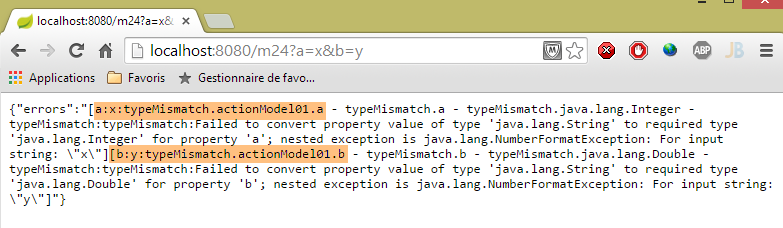 |
En el ejemplo anterior, vemos que:
- la asignación de «x» al campo [ActionModel01.a] ha fallado y el mensaje de error indica el motivo;
- la asignación de «y» al campo [ActionModel01.b] ha fallado y el mensaje de error indica el motivo;
Obsérvese los códigos de error en el campo [a]: [typeMismatch.actionModel01.a - typeMismatch.a - typeMismatch.java.lang.Integer - typeMismatch]. Volveremos sobre estos códigos de error cuando sea necesario personalizar el mensaje de error. Obsérvese que el código de error es [typeMismatch].
Otro ejemplo:
 |
Aquí no se han pasado los parámetros [a] y [b]. Los validadores [@NotNull] del modelo de acción [ActionModel01] han cumplido entonces su función;
Por fin, valores correctos:
 |
4.19. [m/24]: personalización de los mensajes de error
Volvamos a una captura de pantalla del ejemplo anterior:
Arriba vemos los mensajes de error predeterminados. Está claro que no podemos mantenerlos en una aplicación real. Es posible definir estos mensajes de error. Para ello, nos valeremos de los códigos de error. Arriba vemos que el error del campo [a] tiene los siguientes códigos: [typeMismatch.actionModel01.a - typeMismatch.a - typeMismatch.java.lang.Integer - typeMismatch]. Estos códigos de error van de más preciso a menos preciso:
- [typeMismatch.actionModel01.a]: error de tipo en el campo [a] del tipo [ActionModel01];
- [typeMismatch.a]: error de tipo en un campo denominado [a];
- [typeMismatch.java.lang.Integer]: error de tipo en un tipo Integer;
- [typeMismatch]: error de tipo;
También se observa que el código de error del campo [a] obtenido por [error.getCode()] es [typeMismatch] (véase la captura de pantalla anterior).
Vamos a colocar los mensajes de error en un archivo de propiedades:
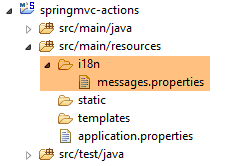 |
El archivo [messages.properties] anterior quedará así:
NotNull=Le champ ne peut être vide
typeMismatch=Format invalide
typeMismatch.model01.a=Le paramètre [a] doit être entier
Cada línea tiene el siguiente formato:
Aquí, la clave será un código de error y el mensaje, el mensaje de error asociado a ese código.
Recordemos los códigos de error para los dos campos:
- [typeMismatch.actionModel01.a - typeMismatch.a - typeMismatch.java.lang.Integer - typeMismatch], cuando el parámetro [a] no es válido;
- [typeMismatch.actionModel01.b - typeMismatch.b - typeMismatch.java.lang.Double - typeMismatch:typeMismatch ] cuando el parámetro [b] no es válido;
- [NotNull.actionModel01.a - NotNull.a - NotNull.java.lang.Integer - NotNull] cuando falta el parámetro [a];
- [NotNull.actionModel01.b - NotNull.b - NotNull.java.lang.Double - NotNull] cuando falta el parámetro [b];
El archivo [messages.properties] debe incluir un mensaje de error para todos los casos de error posibles. En el caso de que
- los parámetros [a] y [b] no están presentes, se utilizará el código [NotNull];
- el parámetro [a] es incorrecto, hemos incluido mensajes para dos códigos [typeMismatch.actionModel01.a, typeMismatch]. Veremos cuál se utiliza;
- si el parámetro [b] es incorrecto, se utilizará el código [typeMismatch];
Para que se utilice el archivo [messages.properties], hay que configurar Spring:
 |
Eliminamos las anotaciones de configuración de la clase [Application]:
package istia.st.springmvc.main;
import org.springframework.boot.SpringApplication;
public class Application {
public static void main(String[] args) {
SpringApplication.run(Config.class, args);
}
}
- línea 8: se inicia la aplicación Spring Boot. El primer parámetro del método estático [SpringApplication.run] es la clase que configura ahora la aplicación;
La clase [Config] es la siguiente:
package istia.st.springmvc.main;
import org.springframework.boot.autoconfigure.EnableAutoConfiguration;
import org.springframework.context.MessageSource;
import org.springframework.context.annotation.Bean;
import org.springframework.context.annotation.ComponentScan;
import org.springframework.context.annotation.Configuration;
import org.springframework.context.support.ResourceBundleMessageSource;
import org.springframework.web.servlet.config.annotation.WebMvcConfigurerAdapter;
@Configuration
@ComponentScan({ "istia.st.springmvc.controllers", "istia.st.springmvc.models" })
@EnableAutoConfiguration
public class Config extends WebMvcConfigurerAdapter {
@Bean
public MessageSource messageSource() {
ResourceBundleMessageSource messageSource = new ResourceBundleMessageSource();
messageSource.setBasename("i18n/messages");
return messageSource;
}
}
- líneas 11-13: aquí se encuentran las anotaciones de configuración que antes estaban en la clase [Application];
- línea 14: para configurar una aplicación Spring MVC, hay que extender la clase [WebMvcConfigurerAdapter];
- línea 15: la anotación [@Bean] introduce un componente Spring, un singleton;
- línea 16: se define un bean denominado [messageSource] (el nombre del método). Este bean sirve para definir los archivos de mensajes de la aplicación y debe tener obligatoriamente este nombre;
- líneas 17-19: indica a Spring que el archivo de mensajes:
- se encuentra en la carpeta [i18n] en la ruta de clases del proyecto (línea 18),
- se llama [messages.properties] (línea 18). De hecho, el término [messages] es la raíz de los nombres de los archivos de mensajes, más que el nombre en sí mismo. Veremos que, en el marco de la internacionalización, pueden existir varios archivos de mensajes, uno por cada cultura gestionada. Así, podemos tener [messages_fr.properties] para el francés y [messages_en.properties] para el inglés. Los sufijos añadidos a la raíz [messages] están normalizados. No se puede poner cualquier cosa;
En el proyecto STS, hay que colocar la carpeta [i18n] en la carpeta de recursos, ya que esta se incluye en la ruta de clases del proyecto:
 |
Para utilizar este archivo, creamos la siguiente acción nueva:
// validación de un modelo, gestión de mensajes de error ------------------------
@RequestMapping(value = "/m25", method = RequestMethod.GET)
public Map<String, Object> m25(@Valid ActionModel01 data, BindingResult result, HttpServletRequest request)
throws Exception {
// el diccionario de resultados
Map<String, Object> map = new HashMap<String, Object>();
// el contexto de la aplicación Spring
WebApplicationContext ctx = WebApplicationContextUtils.getWebApplicationContext(request.getServletContext());
// ¿Locale
Locale locale = RequestContextUtils.getLocale(request);
// ¿Hay errores?
if (result.hasErrors()) {
StringBuffer buffer = new StringBuffer();
for (FieldError error : result.getFieldErrors()) {
// búsqueda del mensaje de error a partir de los códigos de error
// el mensaje se busca en los archivos de mensajes
// los códigos de error en forma de tabla
String[] codes = error.getCodes();
// en forma de cadena
String listCodes = String.join(" - ", codes);
// ¿Se ha encontrado
String msg = null;
int i = 0;
while (msg == null && i < codes.length) {
try {
msg = ctx.getMessage(codes[i], null, locale);
} catch (Exception e) {
}
i++;
}
// ¿Se ha encontrado?
if (msg == null) {
throw new Exception(String.format("Indiquez un message pour l'un des codes [%s]", listCodes));
}
// se ha encontrado: se añade el mensaje de error a la cadena de mensajes de error
buffer.append(String.format("[%s:%s:%s:%s]", locale.toString(), error.getField(), error.getRejectedValue(),
String.join(" - ", msg)));
}
map.put("errors", buffer.toString());
} else {
// ok
Map<String, Object> mapData = new HashMap<String, Object>();
mapData.put("a", data.getA());
mapData.put("b", data.getB());
map.put("data", mapData);
}
return map;
}
Este código es similar al de la acción [/m24]. A continuación explicamos las diferencias:
- línea 3: inyectamos la solicitud [HttpServletRequest request] en los parámetros de la acción. La vamos a necesitar;
- líneas 7-8: recuperamos el contexto de Spring. Este contexto contiene todos los beans de Spring de la aplicación. También permite acceder a los archivos de mensajes;
- línea 10: recuperamos la configuración regional de la aplicación. Este término se explica con más detalle más adelante;
- líneas 15-31: para cada error, buscamos un mensaje que corresponda a uno de estos códigos de error. Se buscan en el orden de los códigos que se encuentran en [error.getCodes()]. En cuanto se encuentra un mensaje, nos detenemos;
- línea 26: cómo recuperar un mensaje en [messages.properties]:
- el primer parámetro es el código buscado en [messages.properties],
- el segundo es una matriz de parámetros, ya que a veces los mensajes tienen parámetros. No es el caso aquí,
- el tercero es la configuración regional utilizada (obtenida en la línea 10). La configuración regional indica el idioma utilizado, [fr_FR] para el francés de Francia, [en_US] para el inglés de USA. El mensaje se busca en messages_[locale].properties, por ejemplo, [messages_fr_FR.properties]. Si este archivo no existe, el mensaje se busca en [messages_fr.properties]. Si este archivo no existe, el mensaje se busca en [messages.properties]. Es este último caso el que nos servirá;
- líneas 25-29: de forma un tanto inesperada, cuando se busca un código inexistente en un archivo de mensajes, se produce una excepción en lugar de un puntero nulo;
- líneas 33-35: se trata el caso de ausencia de mensaje de error;
- líneas 37-38: se construye la cadena de error. En ella, se incluyen la configuración regional y el mensaje de error encontrado;
A continuación se muestran algunos ejemplos de ejecución:
 |
Se observa que:
- la configuración regional de la aplicación es [fr_FR]. Se trata de un valor por defecto, ya que no hemos hecho nada para inicializarla;
- que el mensaje utilizado para los dos campos es el siguiente:
NotNull=Le champ ne peut être vide
Otro ejemplo:
 |
Se observa que:
- el mensaje de error utilizado para el parámetro [a] es el siguiente:
typeMismatch.actionModel01.a=Le paramètre [a] doit être entier
- el mensaje de error utilizado para el parámetro [b] es el siguiente:
typeMismatch=Format invalide
¿Por qué hay dos mensajes diferentes? Para el parámetro [a], había dos mensajes posibles:
typeMismatch=Format invalide
typeMismatch.actionModel01.a=Le paramètre [a] doit être entier
Los códigos de error se han explorado en el orden de la tabla [error.getCodes()]. Resulta que este orden va del código más específico al más general. Por eso se encontró primero el código [typeMismatch.model01.a].
4.20. [/m25]: internacionalización de una aplicación Spring MVC
Ahora que sabemos personalizar los mensajes de error en francés, nos gustaría tenerlos también en inglés, lo que nos lleva a la internacionalización de una aplicación Spring MVC. Para gestionarla, vamos a ampliar la clase de configuración [Config], que queda así:
package istia.st.springmvc.main;
import java.util.Locale;
import org.springframework.boot.autoconfigure.EnableAutoConfiguration;
import org.springframework.context.MessageSource;
import org.springframework.context.annotation.Bean;
import org.springframework.context.annotation.ComponentScan;
import org.springframework.context.annotation.Configuration;
import org.springframework.context.support.ResourceBundleMessageSource;
import org.springframework.web.servlet.config.annotation.InterceptorRegistry;
import org.springframework.web.servlet.config.annotation.WebMvcConfigurerAdapter;
import org.springframework.web.servlet.i18n.CookieLocaleResolver;
import org.springframework.web.servlet.i18n.LocaleChangeInterceptor;
@Configuration
@ComponentScan({ "istia.st.springmvc.controllers", "istia.st.springmvc.models" })
@EnableAutoConfiguration
public class Config extends WebMvcConfigurerAdapter {
@Bean
public MessageSource messageSource() {
ResourceBundleMessageSource messageSource = new ResourceBundleMessageSource();
messageSource.setBasename("i18n/messages");
return messageSource;
}
@Bean
public LocaleChangeInterceptor localeChangeInterceptor() {
LocaleChangeInterceptor localeChangeInterceptor = new LocaleChangeInterceptor();
localeChangeInterceptor.setParamName("lang");
return localeChangeInterceptor;
}
@Override
public void addInterceptors(InterceptorRegistry registry) {
registry.addInterceptor(localeChangeInterceptor());
}
@Bean
public CookieLocaleResolver localeResolver() {
CookieLocaleResolver localeResolver = new CookieLocaleResolver();
localeResolver.setCookieName("lang");
localeResolver.setDefaultLocale(new Locale("fr"));
return localeResolver;
}
}
- líneas 28-32: creamos un interceptor de solicitud. Un interceptor de solicitud extiende la interfaz [HandlerInterceptor]. Dicha clase inspecciona la solicitud entrante antes de que sea procesada por una acción. Aquí, el interceptor [localeChangeInterceptor] buscará un parámetro llamado [lang] en la solicitud entrante, GET o POST y cambiará la configuración regional de la aplicación en función de este parámetro. Así, si el parámetro es [lang=en_US], la configuración regional de la aplicación pasará a ser el inglés de USA;
- líneas 34-37: se redefine el método [WebMvcConfigurerAdapter.addInterceptors] para añadir el interceptor anterior;
- líneas 39-45: sirven para configurar la forma en que la configuración regional se encapsulará en una cookie. Sabemos que una cookie puede servir como memoria del usuario, ya que el navegador del cliente la reenvía sistemáticamente al servidor. El interceptor [localeChangeInterceptor] anterior crea una cookie que encapsula la configuración regional. La línea 42 asigna el nombre [lang] a esta cookie. La cookie también se utiliza para cambiar la configuración regional;
- línea 43: indica que, en ausencia de la cookie [lang], la configuración regional será [fr];
En resumen, la configuración regional de una solicitud se puede establecer de dos maneras:
- pasando un parámetro llamado [lang];
- enviando una cookie denominada [lang]. Esta cookie se crea automáticamente al finalizar el método anterior;
Para aprovechar esta configuración regional, vamos a crear archivos de mensajes para las configuraciones regionales [fr] y [en]:
 |
El archivo [messages_fr.properties] es el siguiente:
NotNull=Le champ ne peut être vide
typeMismatch=Format invalide
typeMismatch.actionModel01.a=Le paramètre [a] doit être entier
El archivo [messages_en.properties] es el siguiente:
NotNull=The field can't be empty
typeMismatch=Invalid format
typeMismatch.actionModel01.a=Parameter [a] must be an integer
El archivo [messages.properties] es una copia del archivo [messages_en.properties]. Cabe recordar que el archivo [messages.properties] se utiliza cuando no se encuentra ningún archivo que se corresponda con la configuración regional de la solicitud. En nuestro caso, si el usuario envía un parámetro [lang=en], dado que el archivo [messages_en.properties] no existe, se utilizará el archivo [messages.properties]. Por lo tanto, el usuario verá los mensajes en inglés.
Probemos. En primer lugar, en el entorno de desarrollo de Chrome (Ctrl-Mayús-I), comprueba tus cookies:
 |
Si tienes una cookie llamada [lang], elimínala. A continuación, con Chrome, solicita URL [http://localhost:8080/m25]:
 |
El navegador ha enviado los siguientes encabezados HTTP:
Se observa que en estos encabezados no hay ninguna cookie [lang]. En este caso, nuestro código utiliza la configuración regional [fr]. Así lo muestra la captura de pantalla. Probemos con otro caso:
 |
- en [1], hemos pasado el parámetro [lang=en] para cambiar la configuración regional a [en];
- en [2], vemos la nueva configuración regional;
- en [3], el mensaje se ha cambiado al inglés;
Veamos ahora los intercambios HTTP:
 |
Se ve arriba que el servidor ha devuelto una cookie [lang]. Esto tiene una consecuencia importante: la configuración regional de la próxima solicitud volverá a ser [en] debido a la cookie [lang] que va a devolver el navegador. Por lo tanto, deberíamos mantener los mensajes en inglés. Comprobémoslo:
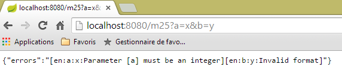 |
En el ejemplo anterior, vemos que la configuración regional se ha mantenido en [en]. Debido a la cookie que envía sistemáticamente el navegador, seguirá siendo así hasta que el usuario la cambie enviando el parámetro [lang] de la siguiente manera:
 |
4.21. [/m26]: inyección de la configuración regional en la plantilla de la acción
En el ejemplo anterior, hemos visto una forma de recuperar la configuración regional de la solicitud:
@RequestMapping(value = "/m25", method = RequestMethod.GET)
public Map<String, Object> m25(@Valid ActionModel01 data, BindingResult result, HttpServletRequest request)
throws Exception {
...
// local
Locale locale = RequestContextUtils.getLocale(request);
// ¿Hay errores?
La configuración regional se puede inyectar directamente en los parámetros de la acción. He aquí un ejemplo:
@RequestMapping(value = "/m26", method = RequestMethod.GET)
public String m26(Locale locale) {
return String.format("locale=%s", locale.toString());
}
 | 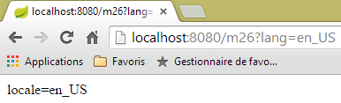 |
 |
Como se ve arriba, no se comprueba la validez de la configuración regional solicitada. Sin embargo, la siguiente solicitud del navegador provoca una excepción en el servidor, ya que la cookie de configuración regional que recibe es incorrecta.
4.22. [/m27]: verificar la validez de un modelo con Hibernate Validator
Consideremos la siguiente acción nueva:
//validación de un modelo con Hibernate Validator ------------------------
@RequestMapping(value = "/m27", method = RequestMethod.POST)
public Map<String, Object> m27(@Valid ActionModel02 data, BindingResult result) {
Map<String, Object> map = new HashMap<String, Object>();
// ¿Hay errores?
if (result.hasErrors()) {
// recorrido por la lista de errores
for (FieldError error : result.getFieldErrors()) {
map.put(error.getField(),
String.format("[message=%s, codes=%s]", error.getDefaultMessage(), String.join("|", error.getCodes())));
}
} else {
// sin errores
map.put("data", data);
}
return map;
}
Aquí tenemos código que ya hemos visto varias veces:
- línea 3: la acción [/m27] se solicita a través de un POST;
- líneas 8-11: cada error se identificará mediante [champ, message] con:
- campo: el campo erróneo,
- mensaje: el mensaje de error asociado, así como la lista de códigos de error;
- línea 14: si no hay errores, se devuelve la cadena jSON de los valores enviados;
En la línea 3, se utiliza el modelo de acción [ActionModel02] siguiente:
 |
package istia.st.springmvc.models;
import java.util.Date;
import javax.validation.constraints.AssertFalse;
import javax.validation.constraints.AssertTrue;
import javax.validation.constraints.Future;
import javax.validation.constraints.Max;
import javax.validation.constraints.Min;
import javax.validation.constraints.NotNull;
import javax.validation.constraints.Past;
import javax.validation.constraints.Pattern;
import javax.validation.constraints.Size;
import org.hibernate.validator.constraints.Email;
import org.hibernate.validator.constraints.Length;
import org.hibernate.validator.constraints.NotBlank;
import org.hibernate.validator.constraints.Range;
import org.hibernate.validator.constraints.URL;
public class ActionModel02 {
@NotNull(message = "La donnée est obligatoire")
@AssertFalse(message = "Seule la valeur [false] est acceptée")
private Boolean assertFalse;
@NotNull(message = "La donnée est obligatoire")
@AssertTrue(message = "Seule la valeur [true] est acceptée")
private Boolean assertTrue;
@NotNull(message = "La donnée est obligatoire")
@Future(message = "Il faut une date postérieure à aujourd'hui")
private Date dateInFuture;
@NotNull(message = "La donnée est obligatoire")
@Past(message = "Il faut une date antérieure à aujourd'hui")
private Date dateInPast;
@NotNull(message = "La donnée est obligatoire")
@Max(value = 100, message = "Maximum 100")
private Integer intMax100;
@NotNull(message = "La donnée est obligatoire")
@Min(value = 10, message = "Minimum 10")
private Integer intMin10;
@NotNull(message = "La donnée est obligatoire")
@NotBlank(message = "La chaîne doit être non blanche")
private String strNotBlank;
@NotNull(message = "La donnée est obligatoire")
@Size(min = 4, max = 6, message = "La chaîne doit avoir entre 4 et 6 caractères")
private String strBetween4and6;
@NotNull(message = "La donnée est obligatoire")
@Pattern(regexp = "^\\d{2}:\\d{2}:\\d{2}$", message = "Le format doit être hh:mm:ss")
private String hhmmss;
@NotNull(message = "La donnée est obligatoire")
@Email(message = "Adresse invalide")
private String email;
@NotNull(message = "La donnée est obligatoire")
@Length(max = 4, min = 4, message = "La chaîne doit avoir 4 caractères exactement")
private String str4;
@Range(min = 10, max = 14, message = "La valeur doit être dans l'intervalle [10,14]")
@NotNull(message = "La donnée est obligatoire")
private Integer int1014;
@URL(message = "URL invalide")
private String url;
// getters y setters
...
}
La clase utiliza restricciones de validación procedentes de dos paquetes:
- [javax.validation.constraints] en las líneas 5-13;
- [org.hibernate.validator.constraints] en las líneas 15-19;
Las dependencias Maven de estos dos paquetes están presentes en el proyecto:
 |
Aquí no vamos a utilizar mensajes internacionalizados, sino mensajes definidos dentro de la restricción con el atributo [message]. Para probar esta acción, vamos a utilizar [Advanced Rest Client]:
 |
- en [1-2], la consulta POST;
- en [3], el encabezado HTTP [Content-Type] que se debe utilizar;
- en [4], el enlace [Add new value] permite añadir un par [paramètre, value];
- en [5], introduzca un campo de [ActionModel02], en este caso el campo [assertFalse]:
@NotNull(message = "La donnée est obligatoire")
@AssertFalse(message = "Seule la valeur [false] est acceptée")
private Boolean assertFalse;
- en [6], introduzca un valor erróneo para ver un mensaje de error. Arriba, la restricción [@AssertFalse] exige que el campo [assertFalse] tenga el valor [false];
 |
- en [7], la respuesta del servidor: se ha activado la restricción [@NotNull] de campos vacíos y se ha mostrado el mensaje de error asociado;
- en [8], el mensaje del campo [assertFalse] para el que no se verificó la restricción [@AssertFalse], así como los códigos de este error. Recordamos que estos códigos pueden estar asociados a mensajes internacionalizados;
He aquí otro ejemplo:
 |

Se invita al lector a probar los diferentes casos de error hasta llegar a POST, con datos todos válidos:
 |  |
Nota: el formato de las fechas es el formato anglosajón: mm/dd/aaaa.
4.23. [/m28]: externalización de los mensajes de error
En la clase [ActionModel02], hemos incluido los mensajes de forma «fija». Es preferible externalizarlos en archivos de mensajes. Seguimos el ejemplo de la acción [/m25]. Creamos la nueva plantilla de acción [ActionModel03] de la siguiente manera:
 |
package istia.st.springmvc.models;
import java.util.Date;
import javax.validation.constraints.AssertFalse;
import javax.validation.constraints.AssertTrue;
import javax.validation.constraints.Future;
import javax.validation.constraints.Max;
import javax.validation.constraints.Min;
import javax.validation.constraints.NotNull;
import javax.validation.constraints.Past;
import javax.validation.constraints.Pattern;
import javax.validation.constraints.Size;
import org.hibernate.validator.constraints.Email;
import org.hibernate.validator.constraints.Length;
import org.hibernate.validator.constraints.NotBlank;
import org.hibernate.validator.constraints.Range;
import org.hibernate.validator.constraints.URL;
public class ActionModel03 {
@NotNull
@AssertFalse
private Boolean assertFalse;
@NotNull
@AssertTrue
private Boolean assertTrue;
@NotNull
@Future
private Date dateInFuture;
@NotNull
@Past
private Date dateInPast;
@NotNull
@Max(value = 100)
private Integer intMax100;
@NotNull
@Min(value = 10)
private Integer intMin10;
@NotNull
@NotBlank
private String strNotBlank;
@NotNull
@Size(min = 4, max = 6)
private String strBetween4and6;
@NotNull
@Pattern(regexp = "^\\d{2}:\\d{2}:\\d{2}$")
private String hhmmss;
@NotNull
@Email
private String email;
@NotNull
@Length(max = 4, min = 4)
private String str4;
@Range(min = 10, max = 14)
@NotNull
private Integer int1014;
@URL
private String url;
// getters y setters
...
}
Los mensajes de error se han exportado a los archivos [messages.properties]:
 |
El archivo [messages_fr.properties] es el siguiente:
NotNull=Le champ ne peut être vide
typeMismatch=Format invalide
typeMismatch.actionModel01.a=Le paramètre [a] doit être entier
Range.actionModel03.int1014=La valeur doit être dans l'intervalle [10,14]
NotBlank.actionModel03.strNotBlank=La chaîne doit être non blanche
AssertFalse.actionModel03.assertFalse=Seule la valeur [false] est acceptée
Pattern.actionModel03.hhmmss=Le format doit être hh:mm:ss
Past.actionModel03.dateInPast=Il faut une date antérieure ou égale à celle d'aujourd'hui
Future.actionModel03.dateInFuture=Il faut une date postérieure à celle d'aujourd'hui
Length.actionModel03.str4=La chaîne doit avoir 4 caractères exactement
Min.actionModel03.intMin10=Minimum 10
Max.actionModel03.intMax100=Maximum 100
AssertTrue.actionModel03.assertTrue=Seule la valeur [true] est acceptée
Email.actionModel03.email=Adresse invalide
Size.actionModel03.strBetween4and6=La chaîne doit avoir entre 4 et 6 caractères
URL.actionModel03.url=URL invalide
Los mensajes de error se han añadido a las líneas 4-16. Tienen el siguiente formato:
Los códigos no pueden ser cualquiera. Son los que se muestran en la acción [/m27] anterior. Por ejemplo:

En los archivos de mensajes, para el campo [int1014] hay que utilizar uno de los cuatro códigos anteriores.
El archivo [messages_en.properties] es el siguiente:
NotNull=The field can't be empty
typeMismatch=Invalid format
typeMismatch.actionModel01.a=Parameter [a] must be an integer
Range.actionModel03.int1014=Value must be in [10,14] interval
NotBlank.actionModel03.strNotBlank=String can't be empty
AssertFalse.actionModel03.assertFalse=Only boolean [false] is allowed
Pattern.actionModel03.hhmmss=String format is hh:mm:ss
Past.actionModel03.dateInPast=Date must be before or equal to today's date
Future.actionModel03.dateInFuture=Date must be after today's date
Length.actionModel03.str4=String must be four characters long
Min.actionModel03.intMin10=Minimum 10
Max.actionModel03.intMax100=Maximum 100
AssertTrue.actionModel03.assertTrue=Only boolean [true] is allowed
Email.actionModel03.email=Invalid email
Size.actionModel03.strBetween4and6=String must be between four and six characters long
URL.actionModel03.url=Invalid URL
La plantilla de acción [ActionModel03] se utiliza en la siguiente acción:
// ----------------------- externalización de los mensajes de error ------------------------
@RequestMapping(value = "/m28", method = RequestMethod.POST)
public Map<String, Object> m28(@Valid ActionModel03 data, BindingResult result, HttpServletRequest request) {
Map<String, Object> map = new HashMap<String, Object>();
// el contexto de la aplicación Spring
WebApplicationContext ctx = WebApplicationContextUtils.getWebApplicationContext(request.getServletContext());
// configuración regional
Locale locale = RequestContextUtils.getLocale(request);
// ¿Errores?
if (result.hasErrors()) {
for (FieldError error : result.getFieldErrors()) {
// búsqueda del mensaje de error a partir de los códigos de error
// el mensaje se busca en los archivos de mensajes
// los códigos de error en forma de tabla
String[] codes = error.getCodes();
// en forma de cadena
String listCodes = String.join(" - ", codes);
// ¿Se ha encontrado
String msg = null;
int i = 0;
while (msg == null && i < codes.length) {
try {
msg = ctx.getMessage(codes[i], null, locale);
} catch (Exception e) {
}
i++;
}
// ¿Se ha encontrado?
if (msg == null) {
msg = String.format("Indiquez un message pour l'un des codes [%s]", listCodes);
}
// se ha encontrado: se añade el error al diccionario
map.put(error.getField(), msg);
}
} else {
// sin errores
map.put("data", data);
}
return map;
}
Ya hemos comentado este tipo de código. Lo único realmente importante es la línea 23: el mensaje de error recuperado depende de la configuración regional de la solicitud.
He aquí un ejemplo en francés:
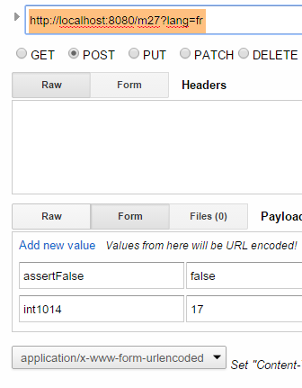 | 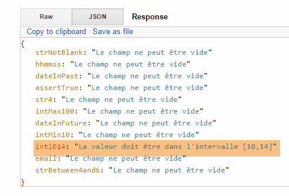 |
y ahora en inglés:
 |  |